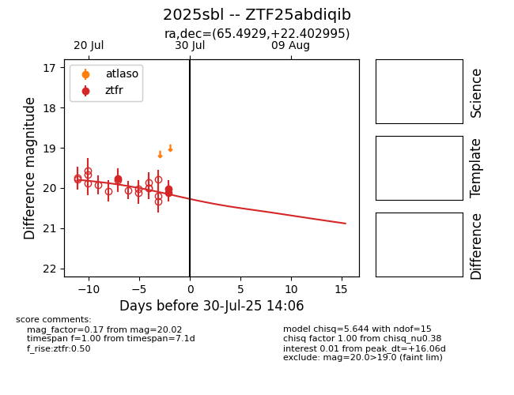

Target 2025sbl at 2025-07-30 14:06, see:
FINK: fink-portal.org/2025sbl
Lasair: lasair-ztf.lsst.ac.uk/objects/2025sbl
ALeRCE: alerce.online/object/2025sbl
TNS: wis-tns.org/object/2025sbl
YSE: ziggy.ucolick.org/yse/transient_detail/2025sbl
alt names
ZTF25abdiqib (ztf,fink)
2025sbl (tns,yse)
coordinates:
equatorial (ra, dec) = (65.4929,+22.40300)
galactic (l, b) = (173.9305,-19.00155)
photometry
last ztfr=20.02
3 ztfr detections
